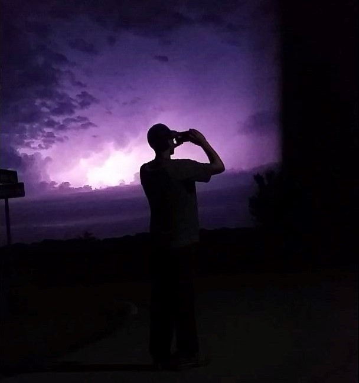

About this page
I have always been fascinated with storm chasing. I have been chasing storms since I can remember, even on my bicycle as a young boy.
In 2002, I seen my first tornado in person and it took my breath away. Be it out of fear, or adrenaline, it is a moment I will never forget!
In 2007, I had just gotten my drivers license, and the first thing I did was prepared my first car for all of weathers phenomenons. I saved up to emergency lights and 2 types of weather radios; one for inside the vehicle and another portable.
After the vehicle was equipped, it was time for myself to get ready. I purchased, at the time, one of the top of the line still cameras I could afford. It was a Sony digital camera with a 2 mega-pixel lens. I also saved up and purchased a Sony Handycam video camera.
My final step was to attend a few volunteer courses through the Red-Cross and National Weather Service to gain some knowledge on not only proper storm spotting, but also in first-aid to assist if a severe storm struck a home or town.
Where I am now
After many years of chasing storms, I had got more comfortable doing so, to the point that it actually terrifies me. When one gets too comfortable doing something dangerous, they fail to see risk and expect nothing but reward.
I've come to realization about this on April 9, 2015 during the Fairdale, Illinois deadly EF-4. This was one of the largest and most dangerous storms I have
Since this day, I have never chased a storm with as much passion as I have in the past. This storm scared me, and also took away the feeling I once had for chasing. I still chase and spot locally to warn family and friends, but I no longer go out of my way to chase severe storms.